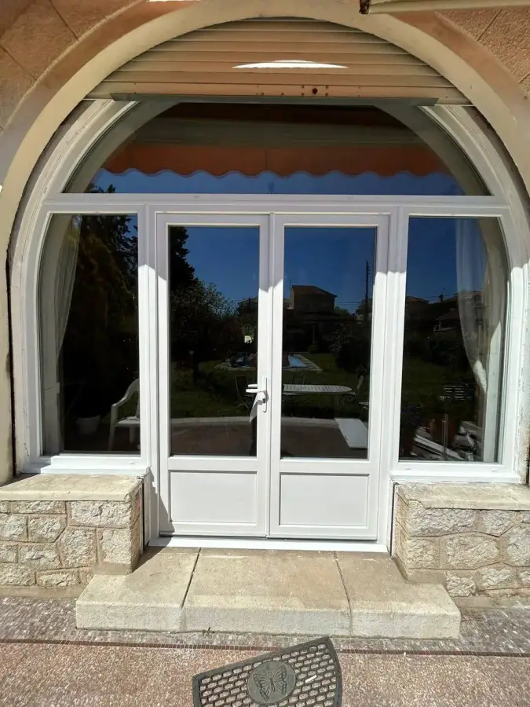

Fenêtres
Pose de fenêtres sur-mesure
Fenêtres PVC ou aluminium, double vitrage, prises sur mesure après relevé précis. Dépose de l'ancienne menuiserie et pose comprises, pour les particuliers comme les commerces.
Plus de confort thermique et phonique, et une vraie luminosité retrouvée.
Demander un devis fenêtres